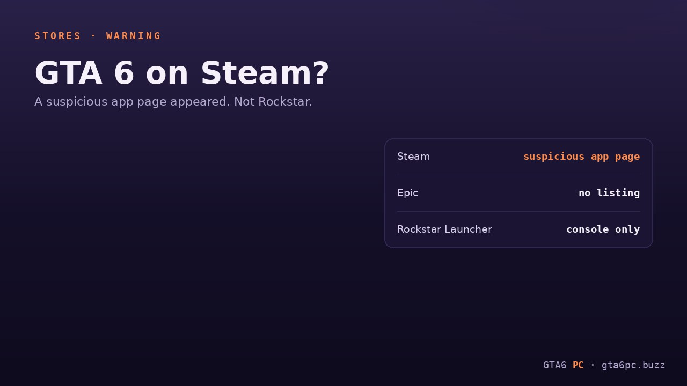

Is GTA 6 on Steam? A fake app page appeared, but it is not the real game
A page called Grand Theft Auto 6 showed up on Steam around launch day, and it is not what it looks like. SteamDB has flagged it as suspicious, and Rockstar has still announced no PC version. Here is what the listing is and how to check any store claim yourself.

The page that appeared
PCGamesN reported on November 20, 2026 that a page named Grand Theft Auto 6 had appeared on Steam. It is not a normal listing. The page is hidden from Steam search and opens only through its direct address, because Steam's own notice says it is unlisted at the publisher's request. It shows no images, no developer or publisher, and its store genre is listed as free-to-play. There is nothing to buy or download on it.
The tracking site SteamDB, which is not run by Valve, has the fuller picture. The app, numbered 2869070, was first added to SteamDB's records on March 1, 2024, then sat largely idle for almost three years until a burst of activity around November 19, the day GTA 6 launched on consoles. SteamDB has flagged the application as suspicious, warning that it could be malicious or impersonating another product, and has advised users against purchasing or downloading it if it becomes available. Notebookcheck, VGTimes and Softonic all covered the listing the same way. Neither Valve nor Rockstar has commented on it.
There is also an odd history behind the entry. Reports link the same app entry to earlier fake listings for Rust 2 and Elden Ring 2, connected to a publisher that was later banned. That does not prove this page itself contains malware, and nobody has shown that it does, but it is one more reason not to trust it. A page with no owner, no images and a history of impersonation is not a store listing. It is a trap waiting for a download button.
Why it is not Rockstar's game
Rockstar has announced no PC version of GTA 6, on Steam or anywhere else. That alone settles it, but the page gives itself away in several other ways. A real Rockstar listing would name Rockstar Games as the developer and publisher, show screenshots and trailers, list a price and a release date, and appear in Steam search. This page has none of those things.
The free-to-play tag is the clearest giveaway. GTA 6 sells for $79.99 for the Standard Edition and $99.99 for the Ultimate Edition on consoles. A free-to-play tag on a $79.99 game does not fit, and no official listing would carry it. The page's age is another tell. An app entry from March 2024 that sat idle for almost three years is not how Rockstar launches a store page. Rockstar's store pages arrive with trailers, screenshots and a Newswire post, not as a blank page that wakes up on launch day.
None of this changes the underlying position. There is still no official GTA 6 listing on Steam, Epic or the Rockstar Games Launcher, and there is no PC version to buy, pre-order or wishlist. What changed on November 19 is that scammers now have a page on Steam itself to point people at, which makes the checks below more important, not less.
Store by store, checked November 2026
| Store | GTA 6 PC listing? | Notes |
|---|---|---|
| Steam | No official listing | One suspicious unlisted app page (2869070) using the game's name, flagged by SteamDB. Not Rockstar's. |
| Epic Games Store | No | No listing |
| Rockstar Games Launcher | No PC listing | Console versions are sold through the Rockstar store for PS5 and Xbox |
| PlayStation Store | Console only | PS5 version, $79.99 standard edition in the US |
| Microsoft Store | Console only | Xbox Series X|S version |
What Rockstar's history suggests
GTA V is sold on Steam, Epic and the Rockstar Launcher today. Red Dead Redemption 2 launched on PC through the Rockstar Launcher and Epic first, with Steam following about a month later. So a staggered store rollout for GTA 6 is plausible. Plausible is all it is: Rockstar has announced nothing, and a store page appearing is itself one of the first real signs a PC version is coming. Our PC launch explainer covers the expected pattern in full.
How to check a store claim yourself
Fake store pages circulate every time a big game is PC-less, and the GTA 6 app page shows the scam has now reached Steam itself. The checks take a minute and they work for any game. Type store.steampowered.com into your browser yourself and search there, and never follow a shared link to a store page for an unannounced game. Phishing pages copy Steam's design and harvest logins, and a shared link is how most people reach them.
Then read the page like a checklist. A real listing names its developer and publisher, shows screenshots and trailers, lists a price or a release date, and appears in search. If all four are missing, it is not a real listing. For extra certainty, look the app up on SteamDB, which shows when the entry was created and how often it changed. A real Rockstar page would be new, busy and complete. This one was created in March 2024, sat idle for almost three years, and is blank.
The same rule covers keys. If a key site offers a Steam key for a game with no official Steam page, you already have your answer, as our price and pre-order guide explains. And if a site offers a download, installer or early access build for GTA 6 on PC, it is fake, as our fake download guide explains in detail.
Quick answers
Is GTA 6 on Steam?
No, not officially. A suspicious page using the game's name appeared on Steam around launch, but it has no developer, publisher or screenshots, and SteamDB flagged it as possibly malicious. Rockstar has announced no PC version for any store.
What is the GTA 6 Steam app page?
It is an unlisted Steam app page, numbered 2869070, named Grand Theft Auto 6. It first appeared in SteamDB records on March 1, 2024 and saw a burst of activity around November 19, 2026. It shows no images and no developer or publisher, is tagged free-to-play, and SteamDB advises against buying or downloading anything from it.
Will GTA 6 come to Steam at launch on PC?
Rockstar has not said. Red Dead Redemption 2 reached Steam about a month after its PC launch on other stores, so a delay is possible, but nothing is confirmed for GTA 6.
Can I wishlist GTA 6 on Steam?
No. There is no official page to wishlist. The unlisted app page is not Rockstar's listing, and pages or links claiming to be the GTA 6 Steam page are fake.
Last updated . We update this page when Rockstar announces anything new.
Sources
- TechGuideHQ: GTA 6 PC official status, Steam and system requirements
- GTASnaps: GTA 6 PC system requirements, none exist yet
- Notebookcheck: GTA 6 has appeared on Steam, but it is not the PC port fans are waiting for
- VGTimes: A suspicious Grand Theft Auto 6 Steam page appeared around launch
- Softonic: GTA 6 has appeared on Steam, but don't get excited yet
- GTA Bay: Fake GTA 6 PC downloads are malware